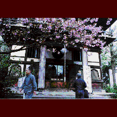
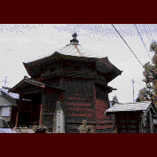
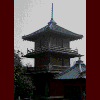
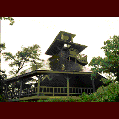

さざえ堂その2
まだまだありました、さざえ堂あれこれ。日本は広い！
長禅寺/茨城県取手市 
取手の駅前というロケーションにある長禅寺。しかし寺域は街より一段高台になっており、駅前の騒々しさはここには伝わってこない。その境内の一画に三世堂、または観音堂、または百観音堂と呼ばれるお堂がある。しかしてその実体はさざえ堂なのである。
このさざえ堂、文暦元年（1234）創建とあるが、現在の形、つまりさざえ堂形式に再建されたのが宝暦13年（1763）。発願は観覚光音禅師、建設は地元の大工によるものである。安永9年（1780）に建立されたさざえ堂のルーツといわれる本所五百羅漢寺三匝堂より古いという点がポイント（建立の時期に関しては諸説あり）。
このさざえ堂は一階に本尊十一面観音と坂東三十三ケ所、二階に秩父三十四ケ所、三階に西国三十三ケ所、の百観音が奉られているのだが、基本的なプランとしては児玉や太田のさざえ堂と同じものである。
修復工事を重ねているのと開帳が年に一回だけなのとで堂内はキレイ。
他のさざえ堂と比べると若干「遊び」が少ないように思えるこのさざえ堂、しかしよく見ればそこには当時の人々の「からくり」への熱狂の残照が浮かんでくる。
外観のデザインとして目を引く正面上層部のふたつの丸窓。外から見ると二階に見えるのだが、実はこれは三階なのである。そして正面の賽銭箱の上、丁度鰐口の後にも、庇に隠れて見難いが丸窓がある。この丸窓がある部分がニ階部分なのだ。何やら金沢の忍者寺のようではないか。
※開帳は4月18日のみ
蘭庭院六角堂/青森県弘前市 
弘前の寺町、禅林街。長禅寺を中心に文字通り道の両側に33の塔頭がズラリと並ぶストリートだ。その一画に忘れ去られたように異形の塔が建っている。弘前のさざえ堂だ。
ここは通称六角堂と呼ばれているが実際は八角堂で、それぞれの壁面には干支の文字が掲げられている（方位を示している？）。そして外から見ると窓の格子の位置が正面から左に行くに従って段々と高くなっている。
つまりここは会津のさざえ堂のような螺旋スロープ形式のさざえ堂なのだ。
内部は一回り半で塔の頂上部に至りそこから梯子で降りてくる、というさざえ堂としては簡略型なのだが、本州の果てにまでさざえ堂ブームが達していたことの意味は大きい。
ちなみにこのさざえ堂が出来たのは天保10年（1839）、弘前の豪商中田嘉兵衛が町方の大工に作らせたものだ。江戸のさざえ堂ブームから約半世紀後のことである。
※内部は禅林街の蘭庭院にて鍵を借りる
西新井大師栄螺堂/東京都足立区 
西新井大師にさざえ堂があるという話を聞き付け、何度も行ったことのあるところだけに「はて、そんなモノあったかなあ」などと思いつつ改めて行ってみると、ありました。山門の左側に。
「都内唯一のさざえ堂」と誇らし気に書かれた立て札とは裏腹に、これはどう見ても三重の塔。一応百観音が各階にいる様だが、塔の外にある階段を使って登り降りするスタイルはどう考えてもさざえ堂と言い難い。
現在はその階段さえ外してしまってあるので、「（階段さえあれば）登る事の出来る三重の塔」としか形容できない。
※内部非公開
萬松園栄螺堂/石川県加賀市 
これはお寺じゃあないんで少し躊躇するものはあるんだけど、一応参考までに。
女体盛り発祥の地という噂もある山代温泉。その温泉街のすぐ後ろにある萬松園。小高い丘陵状の公園だ。
その一番奥の高台にこの栄螺堂はある。何故かと言えばここの栄螺堂はただの展望台なのだ。しかもつい最近出来たもの。加えて内部は単なる一重螺旋で一回り半するだけのもので、降りるときはまたそのスロープを戻ってくるだけのもの。つまり単なる螺旋スロープの展望台なのだ。
「どこが栄螺堂なんじゃあ、コラあ！」との声も聞こえてきそうだが、なにせ自称しているのだから仕方がない。それにホラ、全体のプロポーションとしては何となく現代版さざえ堂といった雰囲気を醸し出してるじゃあないですか。
情報提供はへりおすさんです
珍寺大道場 HOME